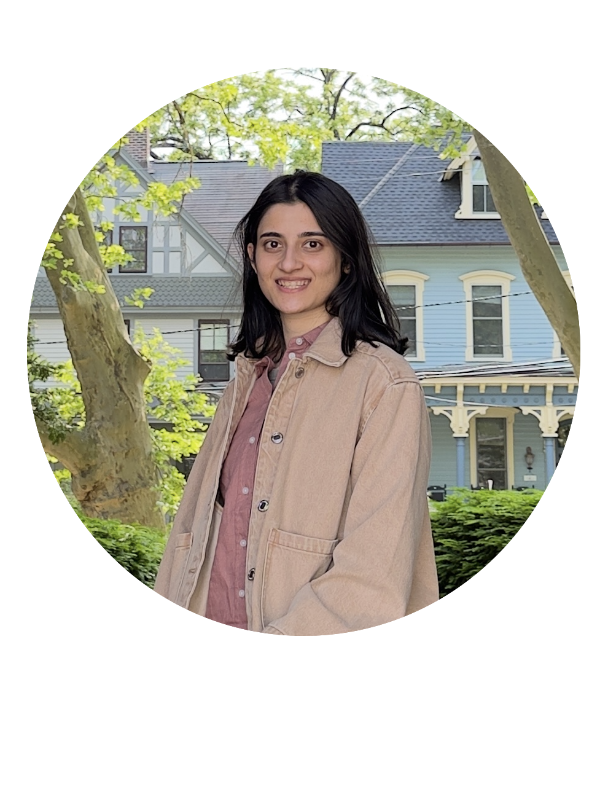

I work on machine learning and optimization for real-time marketplaces at Uber.
Recently, I completed my PhD at NYU as part of the Theoretical CS Group, advised by Christopher Musco and Chinmay Hegde.
Before that, I earned my MS from UMass Amherst, working with Cameron Musco on random sketching for generative models. Earlier, I earned my bachelor's degree from IIIT Hyderabad.
I have also spent time at Netflix (LLM efficiency), Amazon (synthetic data), and Goldman Sachs (as a quant strategist).
You can write to me at first-name@nyu.edu.

Currently, my interests are in algorithmic and systems problems in efficient computation, particularly fast numerical methods for inference, model compression, and scalable vector search.
I also like to study aspects of post-training related to active learning, reward modeling, and verification.
More broadly, I enjoy thinking about fundamental problems. Much of my PhD research focused on randomized sampling algorithms for active regression. I combined tools from randomized numerical linear algebra, high-dimensional statistics, and theoretical CS to prove sample complexity bounds.
I also applied some of these algorithms to build low-cost surrogate models for partial differential equations.
Improved Leverage Score Sampling for Constrained Active Linear Regression
Aarshvi Gajjar,
Syamantak Kumar,
Aditya Makkar,
Christopher Musco,
Joey Zhou
NeurIPS 2026
(Spotlight presentation)
· Advances in Neural Information Processing Systems
Agnostic Active Learning of Single Index Models with Linear Sample Complexity
†Aarshvi Gajjar,
†Wai Ming Tai,
†Xingyu Xu,
Chinmay Hegde,
Christopher Musco and
Yi Li
COLT 2024
· Conference on Learning Theory
Invited poster for
Scientific ML with Scarce Data
at
SIAM MDS24 (Mathematics of Data Science)
Active Learning for Single Neuron Models with Lipschitz Non-Linearities
Aarshvi Gajjar,
Chinmay Hegde and
Christopher Musco
AISTATS 2023
· International Conference on Artificial Intelligence and Statistics
Subspace Embeddings under Nonlinear Transformations
Aarshvi Gajjar,
Cameron Musco
ALT 2021
· Algorithmic Learning Theory
† denotes equal contribution. Otherwise, authors are listed alphabetically by last name.
Putting the Spotlight on Initial State Distribution
Aditya Makkar,
Aarshvi Gajjar and
Eugene Vinitsky
Finding the Frame Workshop
RLC 2025
· Reinforcement Learning Conference
Provable Active Learning of Neural Networks for Parametric PDEs
Aarshvi Gajjar,
Chinmay Hegde and
Christopher Musco
The Symbiosis of Deep Learning and Differential Equations II
NeurIPS 2022
(Spotlight presentation)
· Advances in Neural Information Processing Systems
Outside research, I enjoy staying active: hiking (when I’m not on the East Coast), and lately, Bertrand Russell.